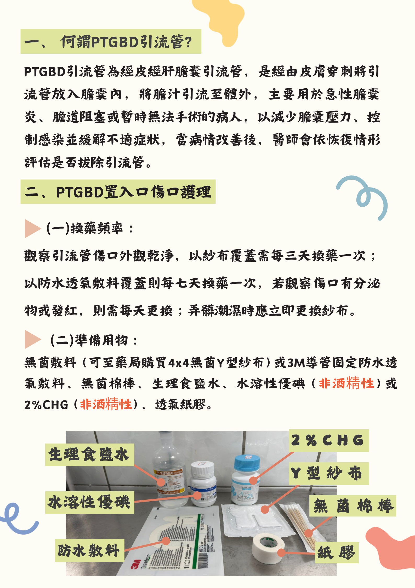
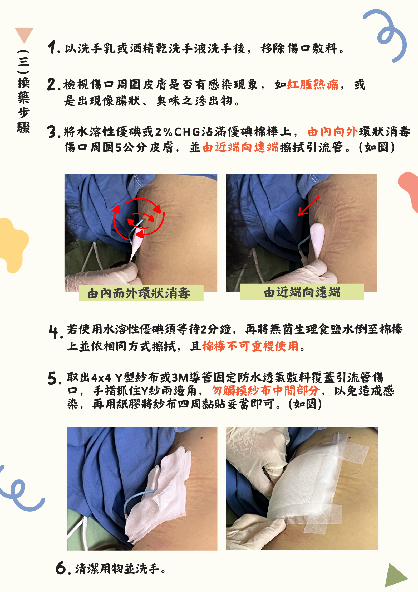
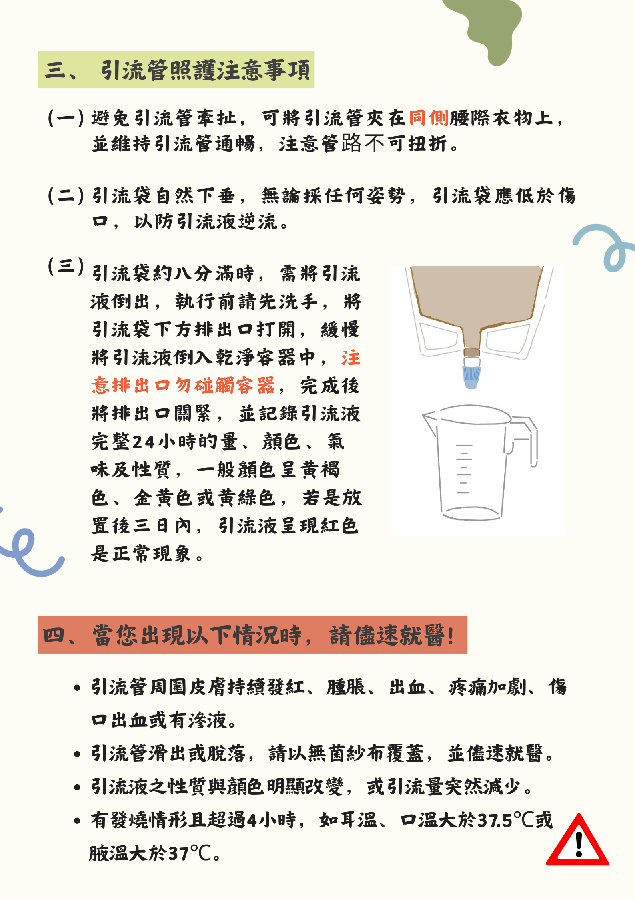
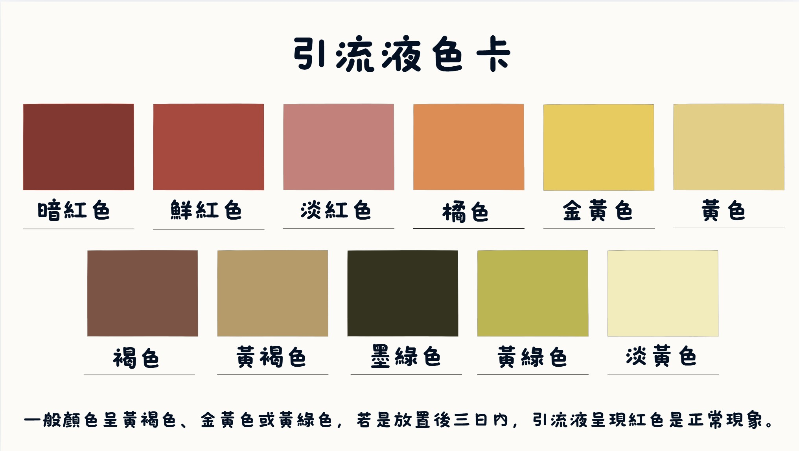

AI諮詢小幫手
AI諮詢小幫手
可輸入 PTGBD、膽汁引流管、傷口觀察或換藥相關問題，系統會先提供即時衛教建議。
使用提醒：
本功能僅供衛教輔助，若出現發燒、膽汁顏色明顯改變、傷口紅腫熱痛、引流量異常減少或突然脫落，仍需立即聯絡醫護人員。
常見可提問主題
- 引流管固定與避免拉扯的方法
- 膽汁顏色、量與性質怎麼觀察
- 何時需要換藥或回醫院處理
- PTGBD 照護與活動建議
日常照護與衛教影片
換藥教學影片：點我觀看影片!。
1. 何謂 PTGBD 引流管？
PTGBD 引流管為經皮經肝膽囊引流管，是經由皮膚穿刺將導管放入膽囊內，將膽汁引流至體外，主要用於急性膽囊炎、膽道阻塞或暫時無法手術之病人，以減少膽囊壓力、控制感染並緩解不適。
2. 傷口護理與換藥
觀察傷口外觀是否乾淨，依醫囑進行換藥；若紗布潮濕、髒污、異味、滲液增加或皮膚發紅，應提早更換並通知醫護人員。
3. 引流管照護重點
避免牽扯與扭折，固定於同側腰際衣物上，並保持引流袋低於傷口位置；引流袋約八分滿時應排空，且排出口不可碰觸容器。
4. 何時需要就醫
若出現引流量突然變少、顏色明顯改變、大量鮮血、傷口紅腫熱痛、滲液增加、發燒持續或引流管滑脫，應儘速就醫。



趣味問答
趣味問答
題目依據 PTGBD 問卷內容設計，點選答案後會立即顯示是否正確。
尚未開始作答。
紀錄表及衛教單張下載
可下載引流液紀錄表與衛教單張，方便列印與居家照護參考。
引流液色卡
引流液色卡
可對照引流液顏色進行觀察與記錄，一般顏色多為黃褐色、金黃色或黃綠色；放置後三日內引流液呈紅色，屬正常情形，若超過三日則須注意。

暗紅色／鮮紅色／淡紅色／橘色
若為放置初期三日內，可持續觀察；若大量鮮紅色或持續出血，應立即就醫。
若為放置初期三日內，可持續觀察；若大量鮮紅色或持續出血，應立即就醫。
金黃色／黃色／淡黃色
多為較常見之膽汁顏色，仍需搭配引流量與病人症狀一起觀察。
多為較常見之膽汁顏色，仍需搭配引流量與病人症狀一起觀察。
黃褐色／褐色
常見於膽汁引流，可持續記錄顏色與量的變化。
常見於膽汁引流，可持續記錄顏色與量的變化。
黃綠色／墨綠色
若與平常差異不大可持續觀察；若顏色突然改變並合併疼痛、發燒或異味，應就醫。
若與平常差異不大可持續觀察；若顏色突然改變並合併疼痛、發燒或異味，應就醫。